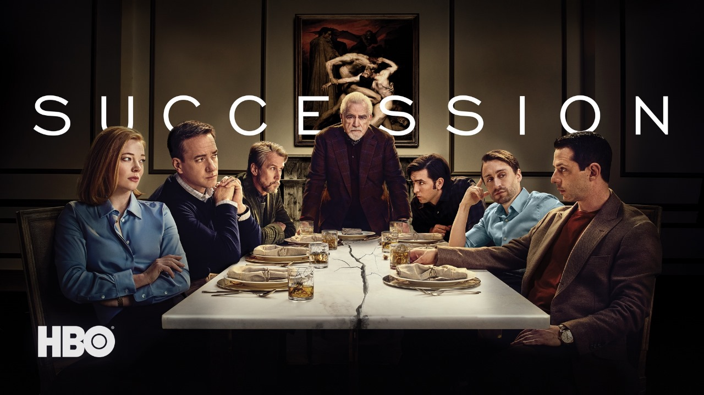
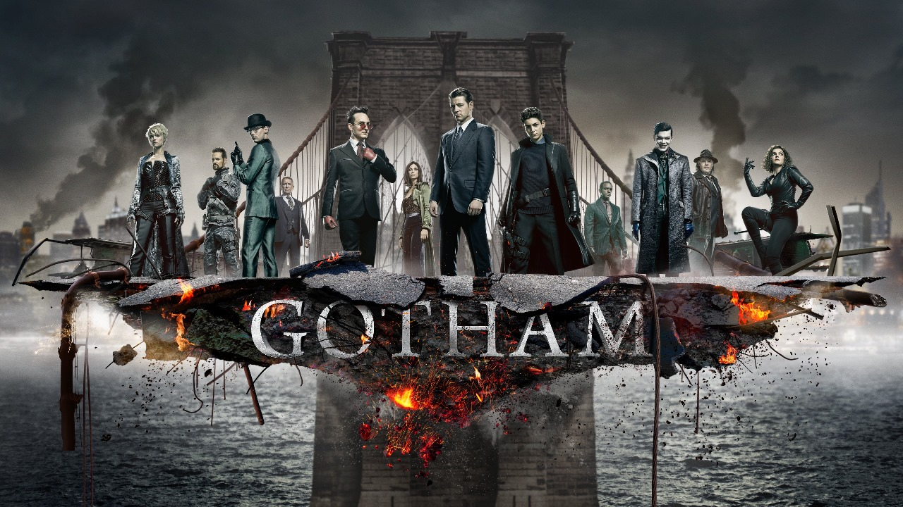

-
 Better Call Saul
Better Call Saul Six years before Saul Goodman meets Walter White. We meet him when the man who will become Saul Goodman is known as Jimmy McGill, a small-time lawyer searching for his destiny, and, more immediately, hustling to make ends meet. Working alongside, and, often, against Jimmy, is “fixer” Mike Ehrmantraut. The series tracks Jimmy’s transformation into Saul Goodman, the man who puts “criminal” in “criminal lawyer".
Six years before Saul Goodman meets Walter White. We meet him when the man who will become Saul Goodman is known as Jimmy McGill, a small-time lawyer searching for his destiny, and, more immediately, hustling to make ends meet. Working alongside, and, often, against Jimmy, is “fixer” Mike Ehrmantraut. The series tracks Jimmy’s transformation into Saul Goodman, the man who puts “criminal” in “criminal lawyer". -
Dahmer – Monster: The Jeffrey Dahmer Story
This series examines the gruesome and horrific true crimes of Jeffrey Dahmer and the systemic failures that enabled one of America’s most notorious serial killers to continue his murderous spree in plain sight for over a decade.
-

Succession
Follow the lives of the Roy family as they contemplate their future once their aging father begins to step back from the media and entertainment conglomerate they control.
-

Gotham
Everyone knows the name Commissioner Gordon. He is one of the crime world's greatest foes, a man whose reputation is synonymous with law and order. But what is known of Gordon's story and his rise from rookie detective to Police Commissioner? What did it take to navigate the multiple layers of corruption that secretly ruled Gotham City, the spawning ground of the world's most iconic villains? And what circumstances created them – the larger-than-life personas who would become Catwoman, The Penguin, The Riddler, Two-Face and The Joker?

This Week Trending Shows